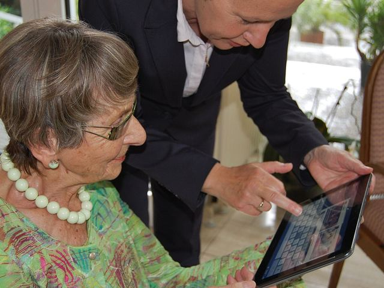
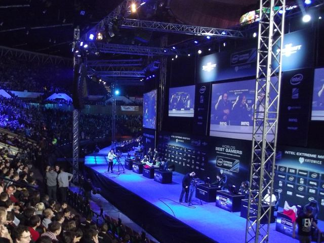
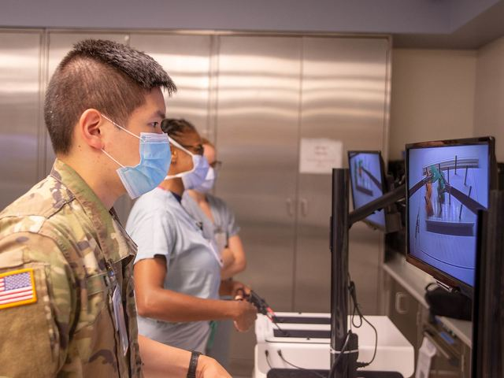
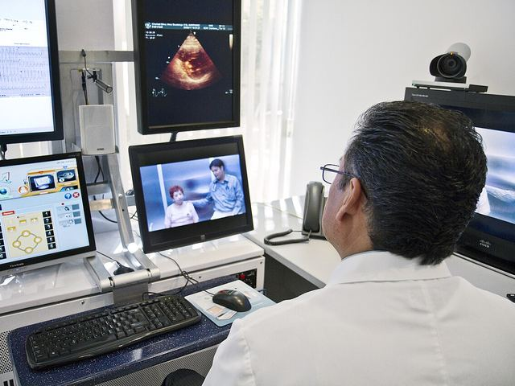

Sheet 1 / 11 · Unit 2 · Thế giới ảo
Mục tiêu bài học & khởi động
Mục tiêu bài học
Sau bài học, học viên có thể:
📚Kiến thức
- dùng từ và cụm từ của 4 nhóm: trò chơi điện tử, nhận xét đánh giá, collocation động từ + danh từ, máy tính và internet;
- cấu tạo và viết đúng trạng từ đuôi ‑ly, phân biệt hard / hardly với late / lately;
- chọn đúng thì hiện tại đơn hay hiện tại tiếp diễn, không dùng động từ trạng thái ở thể tiếp diễn;
- lập họ từ bằng tiền tố và hậu tố (access → accessible → inaccessible).
🛠️Kỹ năng
- đọc lướt và đọc dò văn bản B2 để tìm ý chính, chi tiết, quy chiếu và suy luận;
- nghe tin nhắn, hội thoại và bài nói để lấy thông tin chính;
- trả lời VSTEP Speaking Part 1–3 về trò chơi điện tử, internet và công nghệ trong công việc;
- viết email thân mật để chúc mừng và khuyên (Task 1) và bài luận bàn về hai quan điểm (Task 2).
💡Thái độ
- nhận xét trò chơi và ứng dụng công bằng, có lý lẽ, không theo định kiến;
- tiếp nhận thông tin sức khoẻ trên mạng có chọn lọc và giúp bệnh nhân tìm nguồn đáng tin cậy;
- chỉ dùng tiếng Anh trong các hoạt động nói.
Lead-in 1 · Cuộc sống trên màn hình — mô tả và phản hồi
3:00Chọn hai ảnh, trả lời ba câu hỏi cùng bạn bên cạnh.
Gaming at home
- Câu 1"What is the young man doing? How do you think he feels?"
- Câu 2"What makes a computer game fun to play?"
- Câu 3"How much time is too much time on games?"
Photo: Humphrey Muleba, CC0 (StockSnap), cropped

Online at any age
- Câu 1"What is the helper showing the woman?"
- Câu 2"Why do some older people find new technology difficult?"
- Câu 3"Which app would you teach an older relative first? Why?"
Photo: Sigismund von Dobschütz, CC BY-SA 3.0 (Wikimedia Commons), cropped

Gaming as a sport
- Câu 1"Where are these people, and what is happening on the stage?"
- Câu 2"Why do thousands of people pay to watch other people play games?"
- Câu 3"Should competitive gaming be called a sport?"
Photo: Piotr Drabik, CC BY 2.0 (Flickr), cropped
Virtual reality
- Câu 1"What is she wearing, and what do you think she can see?"
- Câu 2"Have you ever tried virtual reality? What was it like?"
- Câu 3"How could virtual reality be used in medicine?"
Photo: Bruce Mars, CC0 (StockSnap), cropped

Practising surgery on a screen
- Câu 1"What are these trainees doing?"
- Câu 2"What are the advantages of practising on a simulator first?"
- Câu 3"Do you think video games could make someone a better surgeon?"
Photo: MC3 Jake Greenberg, U.S. Navy, public domain (Flickr), cropped

Seeing the doctor online
- Câu 1"Who is the doctor talking to, and how?"
- Câu 2"Which patients benefit most from online consultations?"
- Câu 3"What can't a doctor do through a screen?"
Photo: Intel Free Press, CC BY-SA 2.0 (Wikimedia Commons), cropped
Lead-in 2 · Đồng ý hay không?
4:00Chọn ý kiến của bạn, rồi nêu một lý do.
1 · Computer games are anti-social and violent, and their users are mindless nerds.
2 · Playing games online is a good way to make friends.
3 · Children under twelve should not have their own smartphone.
4 · You can't trust anything you read on the internet.
5 · Patients who google their symptoms make a doctor's job harder.
6 · One day, most consultations will happen online.
Ngôn ngữ hữu ích
- How far do I agree? Completely / up to a point / not at all, because …
- It depends on …
- From what I've seen, …
- That's true up to a point, but …
Lead-in 3 · Bạn biết bao nhiêu từ cho mỗi nhóm trong 4 nhóm?
4:00Gõ mọi từ, cụm từ tiếng Anh bạn biết, cách nhau bằng dấu phẩy.
Group 1Mở nhóm →
Trò chơi điện tử — đặc điểm, người chơi và cách chơiMột trò chơi điện tử hay cần có những gì?
0 từ
Group 2Mở nhóm →
Nhận xét và đánh giá — tính từ, trạng từ và kết luận chungBạn dùng những từ nào để khen hoặc chê một trò chơi, một ứng dụng hay một bộ phim?
0 từ
Group 3Mở nhóm →
Collocation — solve, spend, reach, take và nhiều từ khácNhững danh từ nào đi với solve, spend, reach và take?
0 từ
Group 4Mở nhóm →
Máy tính và internet — thiết bị, thao tác và đời sống trên mạngTrong một ngày làm việc bình thường, bạn làm gì trên máy tính hoặc trên mạng?
0 từ